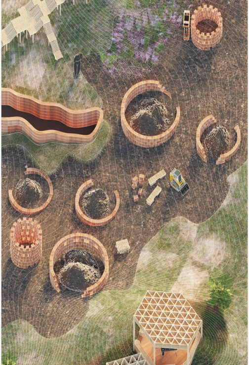
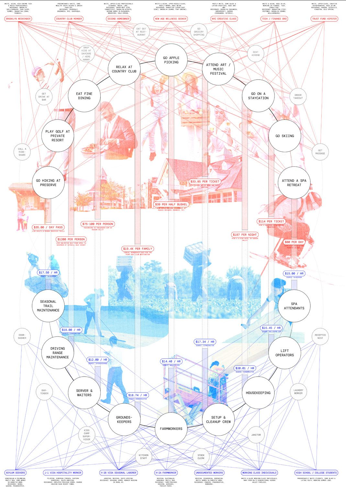
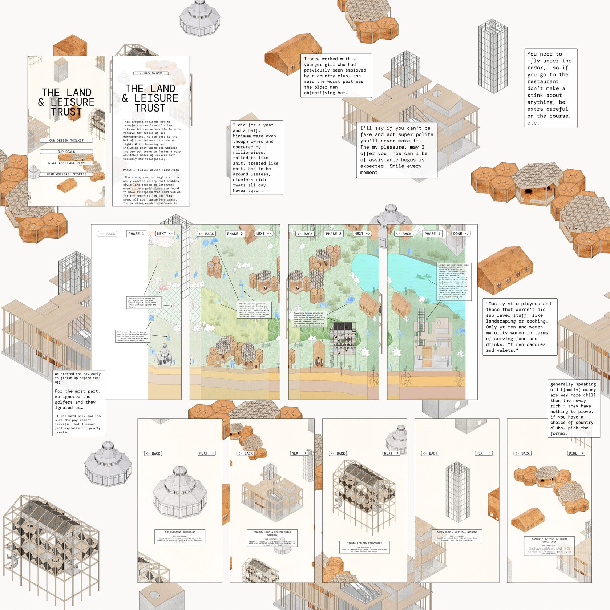
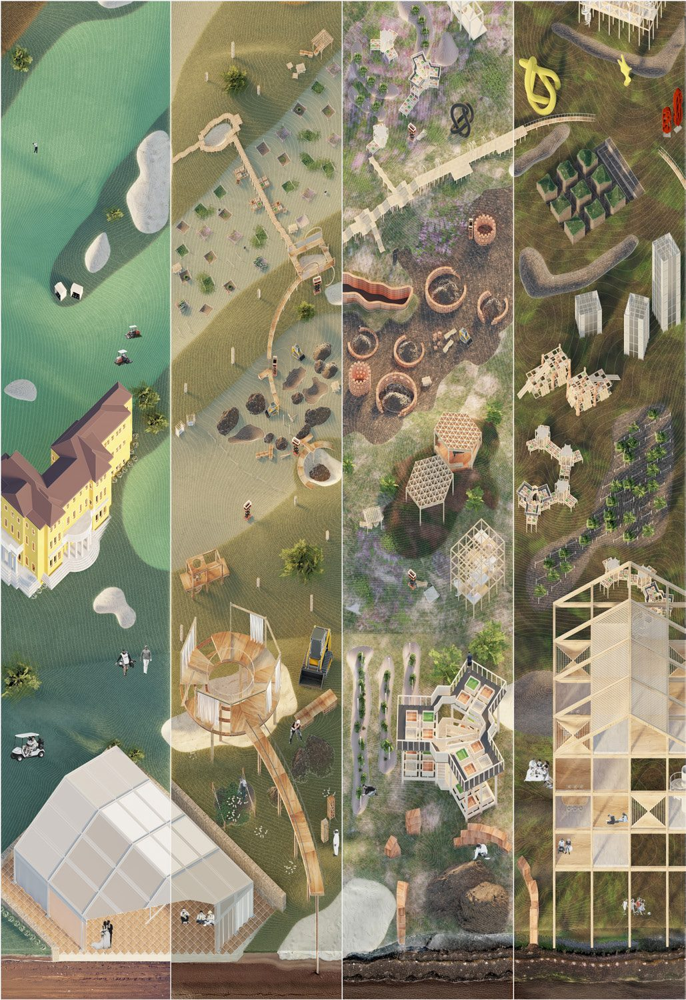
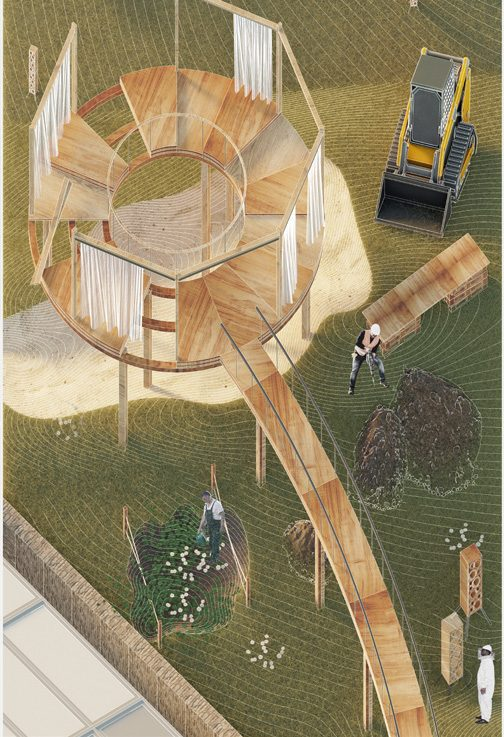
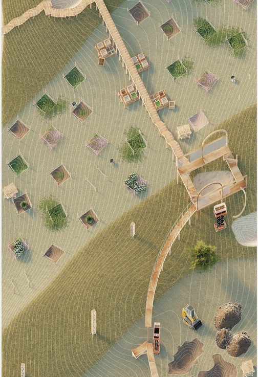
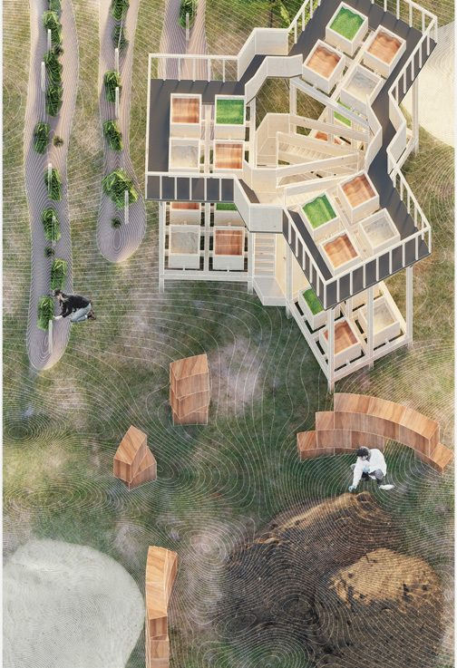
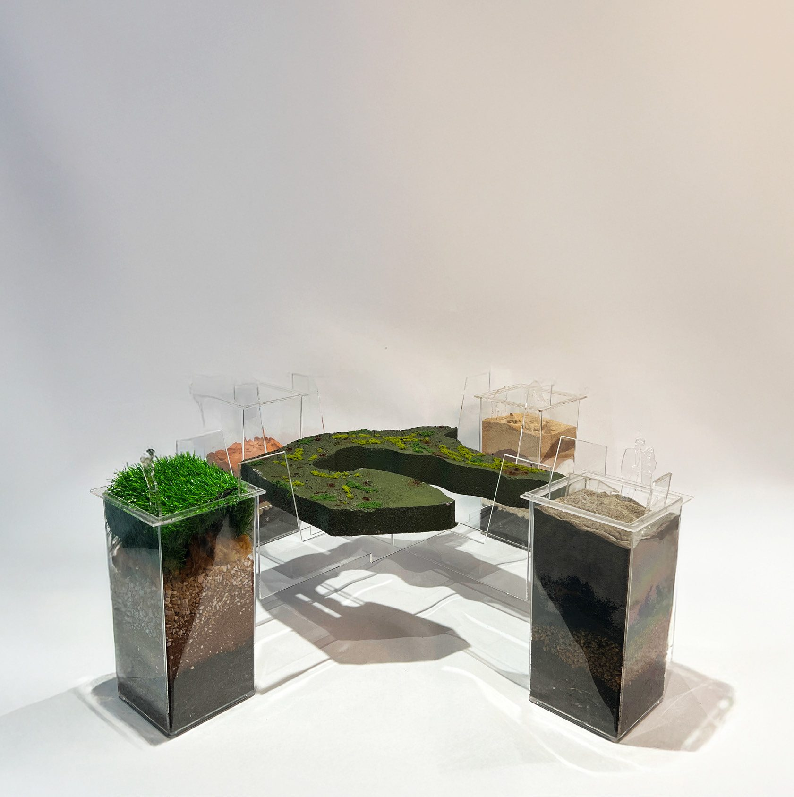
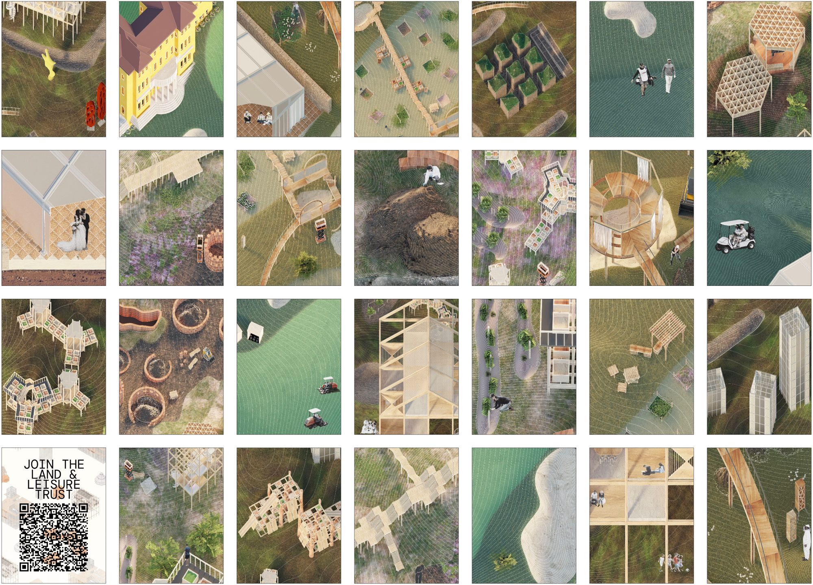

after leisure
- semester
- ADV IV "Sanctuaries Territories", Spring 2025
- site
- Sleepy Hollow Country Club, Hudson Valley, NY
- partner
- Hannah Zhao
- instructor
- Nahyun Hwang
A private country club reimagined as a shared landscape of ecological, social and spatial repair.
This project reimagines Sleepy Hollow Country Club as a fractured landscape of ecological, social and spatial repair. Once upheld by exploitative labor systems and elite leisure, the site becomes a testing ground for new land stewardship models built on care, conflict and collaboration.
After Leisure examines the hidden labor and ecological systems that sustain an exclusive recreational landscape. Using the golf club as a case study, the project maps the asymmetry between visible enjoyment and invisible maintenance. Leisure is framed not as neutral pleasure but as an economy structured by wages, seasonal work, land management and environmental extraction.

the labor network
The labor network diagram maps the full actor ecosystem sustaining the club's "sanctuary": dollar amounts and hourly wages tracing the economic gradient hidden beneath the experience of escape.
The Land & Leisure Trust is presented as a speculative website: a public-facing instrument through which the site's restructuring is proposed, phased and explained by the voices of the workers who actually maintain it.


rewriting the fairway
Fairways and manicured terrain are rewritten as shared landscapes of cultivation, gathering and ecological repair. Soil banks, communal kitchens, classroom pavilions, greenhouse towers and slow-growing clover meadows redistribute access while rebalancing the site's maintenance cycles.




leisure as participation
Leisure is restructured as participation: planting, cooking, learning and gathering become shared acts that redistribute both access and care. Rather than erasing the site's past as an exclusive recreational landscape, the proposal makes its systems visible and negotiable.

